Computer Lab 3. Analyzing Acoustic Data
## NULL## [1] "processing sound event 1 out of 13"
## [1] "processing sound event 2 out of 13"
## [1] "processing sound event 3 out of 13"
## [1] "processing sound event 4 out of 13"
## [1] "processing sound event 5 out of 13"
## [1] "processing sound event 6 out of 13"
## [1] "processing sound event 7 out of 13"
## [1] "processing sound event 8 out of 13"
## [1] "processing sound event 9 out of 13"
## [1] "processing sound event 10 out of 13"
## [1] "processing sound event 11 out of 13"
## [1] "processing sound event 12 out of 13"
## [1] "processing sound event 13 out of 13"Background
In this lab you will become familiar with the ways that we analyze acoustic data. You will start by analyzing focal recordings and soundscapes from Southeast Asia, and you will then upload the data you collected for Field Lab 3 and do some prelminary analysis.
Goals of the exercises
The main goal(s) of today’s lab are to:
1) Create your own spectrograms
2) Learn how we use PCA to visualize differences in acoustic data
3) Upload and visualize your own data
Getting started
First we need to load the relevant packages for our data analysis. Packages contain all the functions that are needed for data analysis.
First we load the required libraries
We need to do some data prep to work through the examples
# First you can check where your working directory is; this is where R will store the files locally
getwd()
# Now we will create a file at this location called 'FocalRecordings'
dir.create(file.path('FocalRecordings'), showWarnings = FALSE)
# Now we will load the sound files that were in the R package
githubURL <-'https://github.com/DenaJGibbon/behaviouRdata/raw/master/data/FocalRecordings.rda'
FocalRecordings <- get(load(url(githubURL)))
# Let's check the structure
head(FocalRecordings)
# Now we will save the recordings to the new folder you created
for(a in 1:length(FocalRecordings)){
FileName <- FocalRecordings[[a]][1][[1]]
WaveFile <- FocalRecordings[[a]][2][[1]]
tuneR::writeWave(WaveFile, paste("FocalRecordings/",FileName,sep=''))
}Part 1. Loading a sound file and making a spectrogram
First we want to check which files are in the folder There are five gibbon female recordings and five great argus recordings.
## [1] "FemaleGibbon_1.wav" "FemaleGibbon_2.wav" "FemaleGibbon_3.wav"
## [4] "FemaleGibbon_4.wav" "FemaleGibbon.wav" "GreatArgus_1.wav"
## [7] "GreatArgus_2.wav" "GreatArgus_3.wav" "GreatArgus_4.wav"
## [10] "MaleSolo_1.wav" "MaleSolo_2.wav" "MaleSolo_3.wav"
## [13] "MaleSolo_4.wav"Now let’s read in one of the files for further investigation. We do that with the function ‘readWave’. The .wav stands for ‘Waveform Audio File’ and is a common format that scientists use to save their sound files.
Now if we run the object it will return some information
##
## Wave Object
## Number of Samples: 572054
## Duration (seconds): 12.97
## Samplingrate (Hertz): 44100
## Channels (Mono/Stereo): Mono
## PCM (integer format): TRUE
## Bit (8/16/24/32/64): 16What we see is that the soundfile is ~13 seconds long, was recorded at a sampling rate of 44100 samples per second and has a total of 572054 samples. We can check if that makes sense using the following equation (duration* sampling rate).
## [1] 572054Now we can plot the waveform from our sound file using the following code:
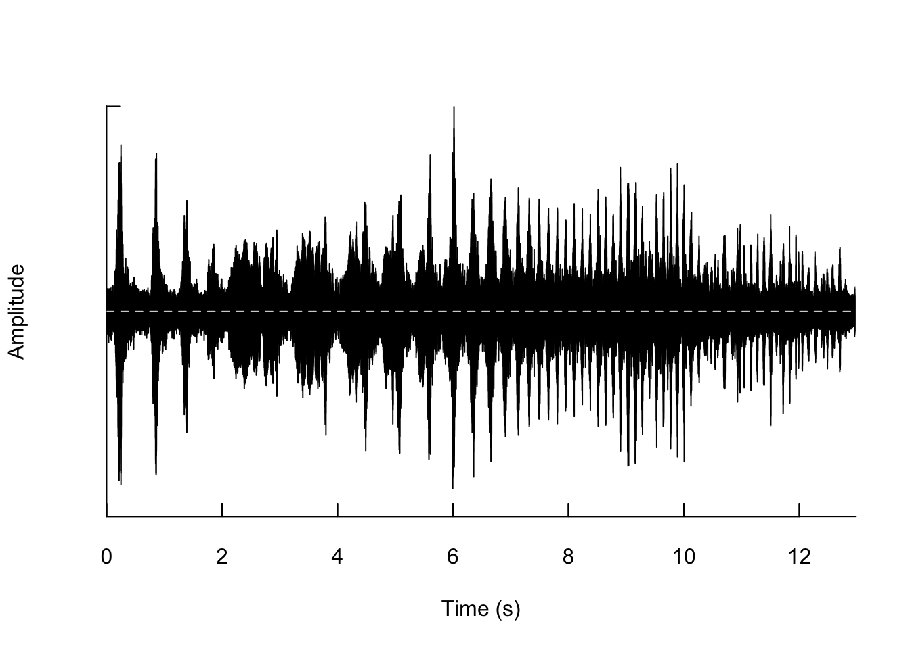
We can also zoom in so that we can actually see the shape of the wave.
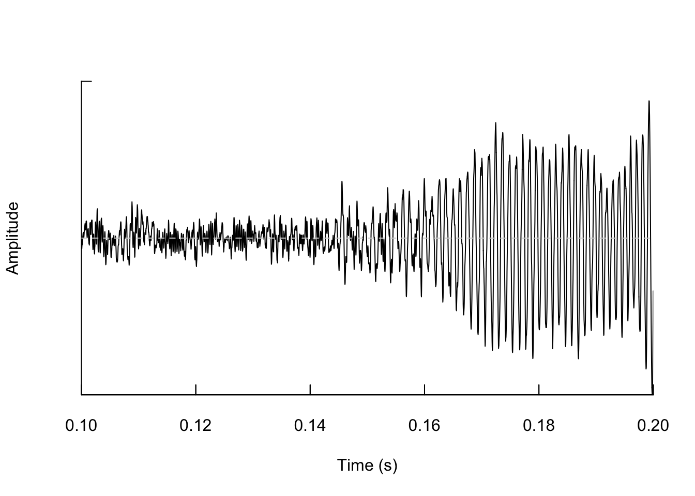
And if we zoom in again we see the wave shape even more.

As we learned in class this week, a common way for scientists to study animal sounds is through the use of spectrograms. Here we will plot a spectrogram of a single gibbon call.
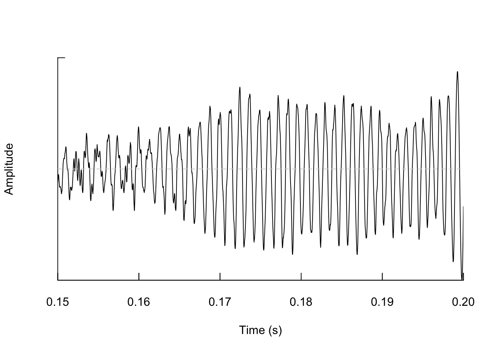
There are many different things you can change when creating a spectrogram. In the above version of the plot there is a lot of space above the gibbon calls, so we will change the frequency range to better visualize the gibbons.
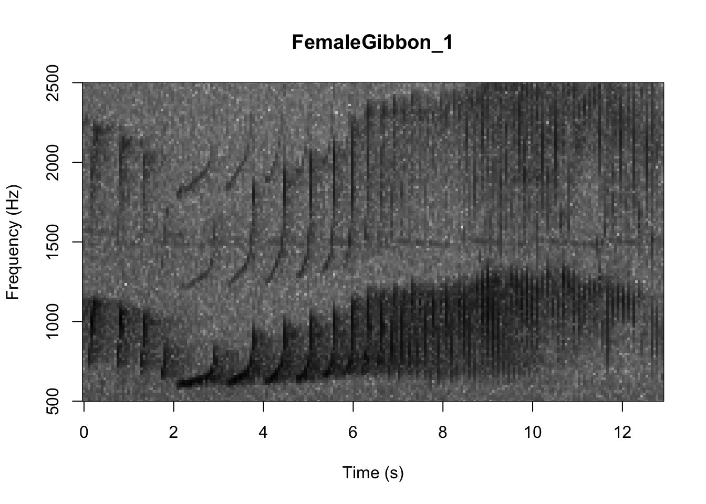
In the code we are using there is also the option to change the color of the spectrogram adding the following code:
SpectrogramSingle(sound.file ="FocalRecordings/FemaleGibbon_1.wav",
min.freq = 500,max.freq=2500,
Colors = 'Colors')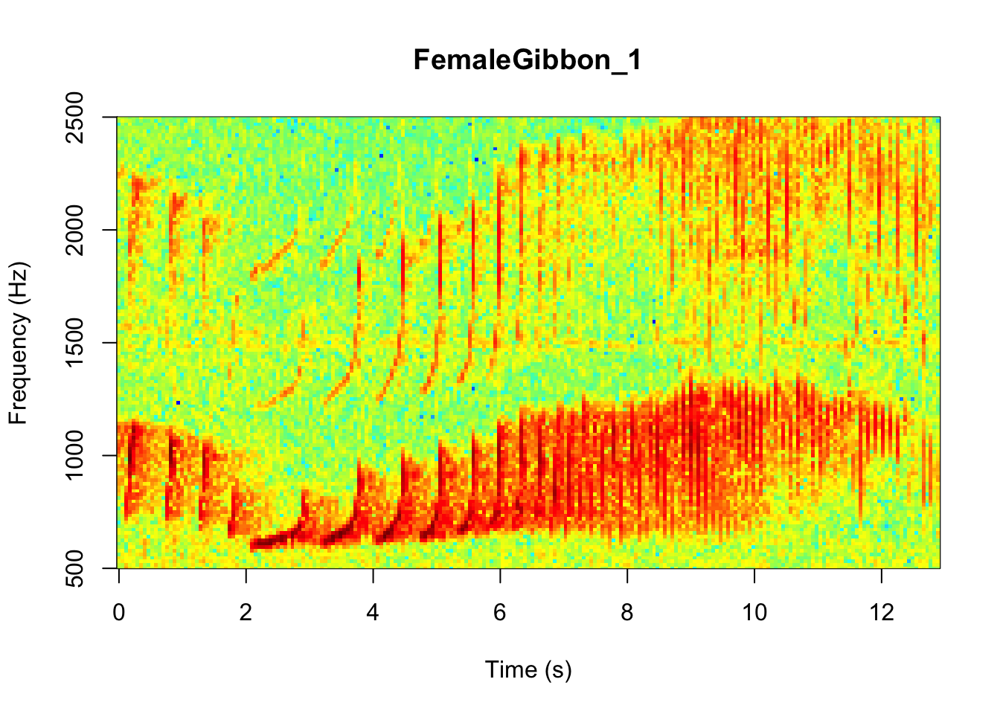
NOTE: Changing the colors doesn’t change how we read the spectrograms,and different people have different preferences.
Now we can plot all of the spectrograms in our FocalRecordings file at once.
NOTE: Use the navigation buttons on the plots tab to move back and forth between the different spectrograms.
# We can tell R to print the spectrograms 2x2 using the code below
par(mfrow=c(2,2))
# This is the function to create the spectrograms
SpectrogramFunction(input.dir = "FocalRecordings",min.freq = 500,max.freq=2500)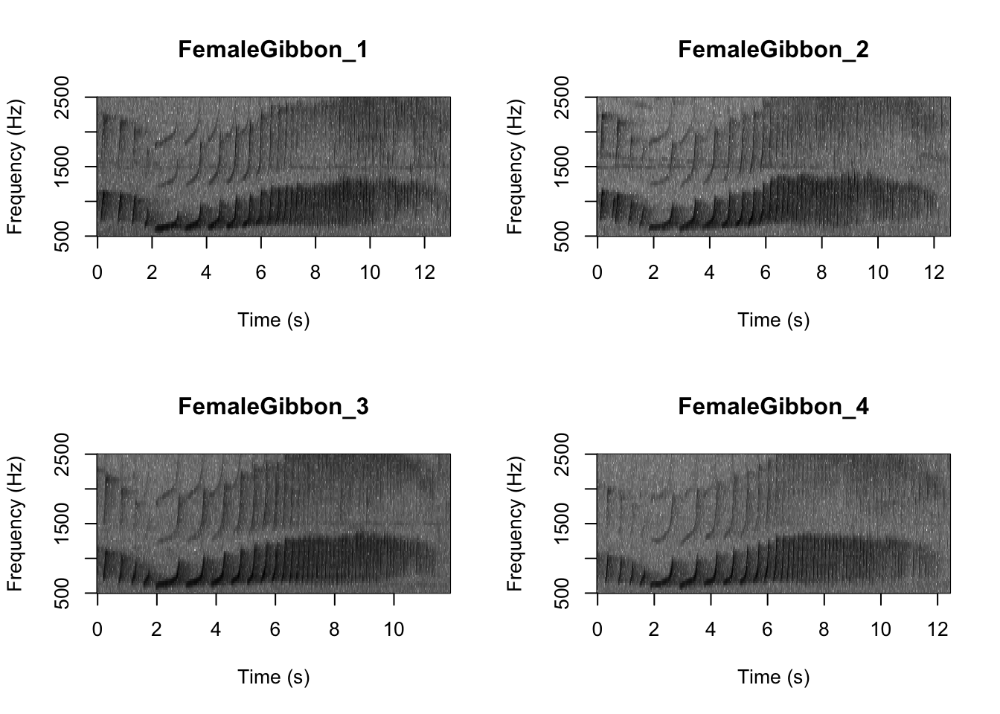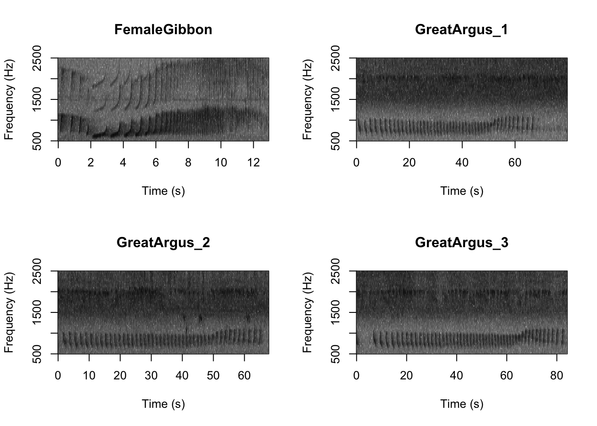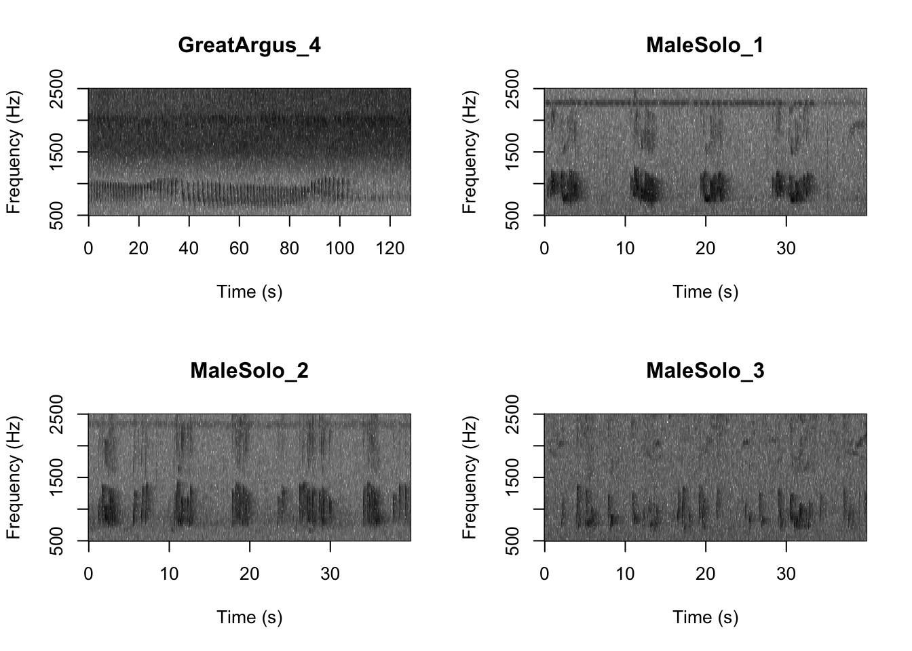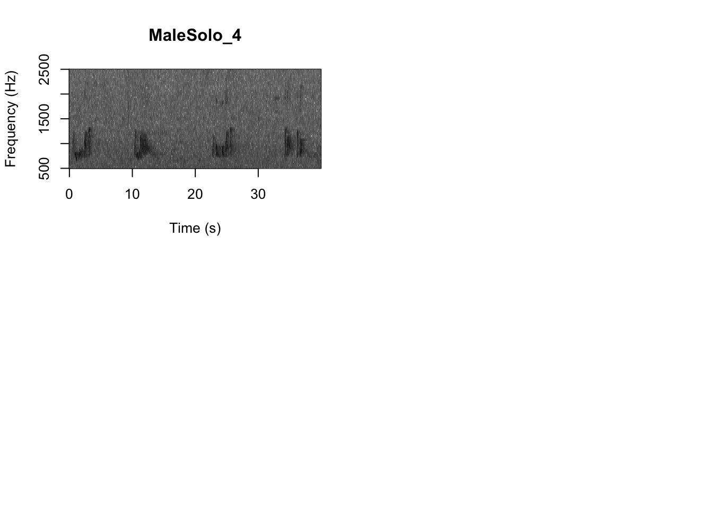
Question 1. What differences do you notice about gibbon and great argus spectrograms?
Now that you are doing looking at the spectrograms we will clear the space. You can always re-run the code to look at the again.
Part 2. Visualizing differences in gibbon and great argus calls
A major question in many different types of behavioral studies is whether there are differences between groups. This is also the case for acoustic data, where researchers may be interested if there are differences between sexes, populations, individuals, or vocalizations emitted in different contexts. Here we will work through a simple example where we will investigate differences in gibbon and argus calls.
The first step that we need to do is called feature extraction. There are many different ways that scientists do this, but the overarching idea is that sound data contains too much redundant information to be used on a model. Computers just don’t have enough power to crunch all those numbers, so we need to identify a meaningful set of features that is smaller than using the while waveform. This is also the case for image processing.
We are going to use a feature extraction method called ‘Mel-frequency cepstral coefficients’. I will not expect you to know any more about them, apart from the fact they are very useful for human speech and bioaccoustics applications.
Below is the function to extract features from our focal recordings
In this new dataframe each row represents one gibbon or great argus call. Let’s check the dimensions of this new dataframe.
## [1] 13 178This shows us that for each of the 10 calls there are 178 features. This is in contrast to a sound file. Let’s check again to remind ourselves.
##
## Wave Object
## Number of Samples: 572054
## Duration (seconds): 12.97
## Samplingrate (Hertz): 44100
## Channels (Mono/Stereo): Mono
## PCM (integer format): TRUE
## Bit (8/16/24/32/64): 16This sound file is comprised of 572054 numbers. Now let’s check the first row of our new dataframe which contains the new features for the same gibbon call.
## Class 1 2 3 4 5 6
## 1 FemaleGibbon -4.914312 -16.40678 -4.672827 20.59783 -4.632383 -6.999979
## 7 8 9 10 11 12 13 14
## 1 4.438287 -3.773641 -5.61846 10.73634 0.9757686 -1.163231 -6.800348 -17.70036
## 15 16 17 18 19 20 21 22
## 1 -2.564371 5.702963 8.604349 5.529339 2.561141 -2.507278 -8.423425 -6.229291
## 23 24 25 26 27 28 29 30
## 1 -3.115276 -7.588447 -23.27116 -3.826297 17.3082 8.632006 -1.60833 2.771364
## 31 32 33 34 35 36 37 38
## 1 -3.018685 -13.47489 -5.147027 -6.892077 -12.00958 -21.92954 9.776812 14.48623
## 39 40 41 42 43 44 45 46
## 1 0.08553639 2.275835 4.157477 -15.22412 -8.4252 8.55771 -7.545372 -20.37116
## 47 48 49 50 51 52 53 54
## 1 -9.496601 20.42913 0.1681313 2.009451 4.554415 -16.20235 -2.036649 9.715715
## 55 56 57 58 59 60 61 62
## 1 -1.521847 -4.390747 -23.6537 -1.739798 13.12778 -5.910114 6.569014 6.026896
## 63 64 65 66 67 68 69 70
## 1 -9.226613 -1.68419 4.550749 -5.170068 -10.94638 -20.08074 2.986301 9.424681
## 71 72 73 74 75 76 77 78
## 1 -6.254541 10.38071 -5.0744 -4.867023 -0.4075844 -2.65999 2.784278 -11.88797
## 79 80 81 82 83 84 85 86
## 1 -13.21431 5.279703 8.139582 -5.553872 5.027628 -3.739047 -3.1116 4.341732
## 87 88 89 90 91 92 93 94
## 1 -1.209793 1.00652 -1218.033 -1112.45 -830.5594 -462.4005 25.70725 66.06332
## 95 96 97 98 99 100 101 102
## 1 -5.735883 -36.24788 53.94479 37.60848 3.826036 -1222.493 -1046.01 -770.889
## 103 104 105 106 107 108 109 110
## 1 -393.6294 80.33639 49.16433 5.84342 -92.54861 -126.7318 -115.9133 -78.65571
## 111 112 113 114 115 116 117 118
## 1 -1222.167 -1044.567 -793.9816 -401.6897 87.24976 31.49047 -2.96363 -118.2727
## 119 120 121 122 123 124 125
## 1 -154.4816 -83.69734 -33.83878 -1229.136 -1086.172 -808.4772 -399.4776
## 126 127 128 129 130 131 132 133
## 1 53.89249 11.00474 11.99423 -57.18338 1.68353 85.31662 102.8748 -1239.725
## 134 135 136 137 138 139 140 141
## 1 -1088.64 -803.1513 -479.0124 44.22369 73.85069 -22.86258 -84.05236 -3.588271
## 142 143 144 145 146 147 148 149
## 1 -2.478177 9.528495 -1240.362 -1068.622 -782.7229 -440.9671 63.08211 80.21284
## 150 151 152 153 154 155 156 157
## 1 -46.79594 -82.71886 -40.87362 -75.92 -49.31079 -1285.428 -1091.577 -842.4694
## 158 159 160 161 162 163 164 165
## 1 -460.0004 72.63099 32.0981 -40.61593 -20.85975 31.29035 11.68475 66.2166
## 166 167 168 169 170 171 172 173
## 1 -1225.674 -1065.805 -823.5072 -452.4384 74.0775 24.51663 -33.48887 -13.24513
## 174 175 176 177
## 1 25.57118 3.053292 26.88251 12.97175## [1] 178OK, now we are ready to do some plotting. If you remember from our earlier lab, the data structure we have here is multivariate, as each call has multiple values associated with it. So we will use the same approach (principal component analysis) to visualize our gibbon and great argus calls.
First we run the principal component analysis
Now we visualize our results
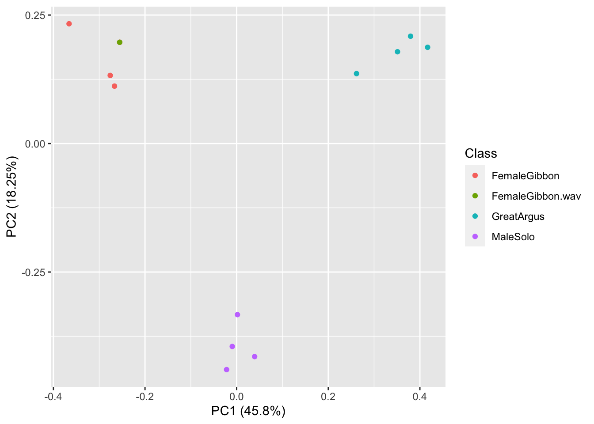
What we see in this plot is strong clustering, with the points from each class of calls more close to the other points than those of different calls.
Question 2. How do we interpret the clustering in this PCA plot?
Part 3. Soundscapes
Now we will do something similar to our investigation of the focal recordings, but using a soundscape example. Here we have 20-sec recordings taken from two different locations (Borneo and Sulawesi) and two different times (06:00 and 18:00). Let’s check what is in the folder.
## [1] "Borneo_Morning_01.wav" "Borneo_Morning_02.wav"
## [3] "Borneo_Morning_03.wav" "Borneo_Morning_04.wav"
## [5] "Borneo_Night_01.wav" "Borneo_Night_02.wav"
## [7] "Borneo_Night_03.wav" "Borneo_Night_04.wav"
## [9] "Sulawesi_Morning_01.wav" "Sulawesi_Morning_02.wav"
## [11] "Sulawesi_Morning_03.wav" "Sulawesi_Morning_04.wav"
## [13] "Sulawesi_Night_01.wav" "Sulawesi_Night_02.wav"
## [15] "Sulawesi_Night_03.wav" "Sulawesi_Night_04.wav"Now we will create spectrograms for each recording
par(mfrow=c(2,2))
SpectrogramFunctionSite(input.dir = "SoundscapeRecordings",
min.freq = 0,max.freq=20000)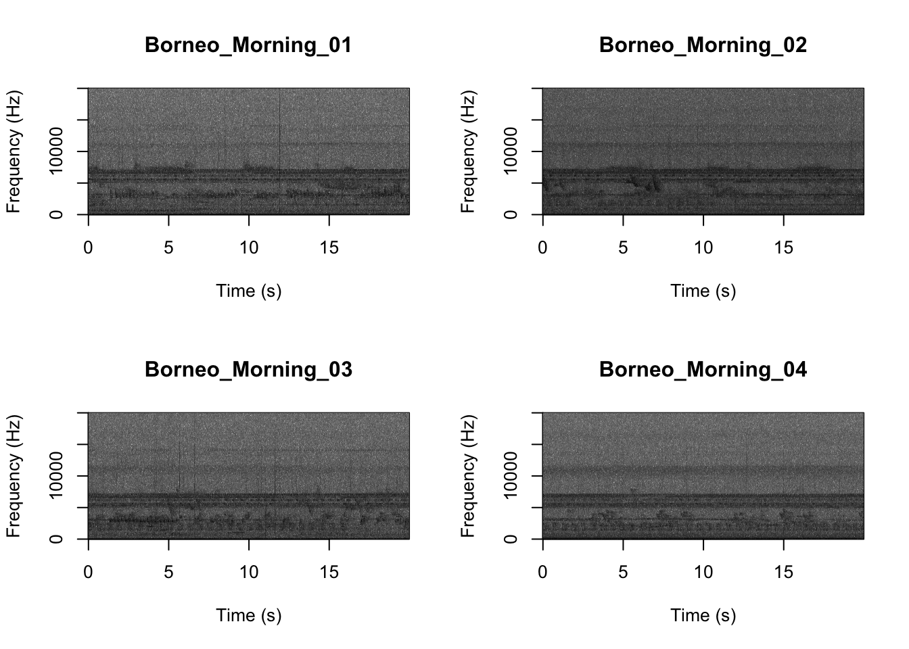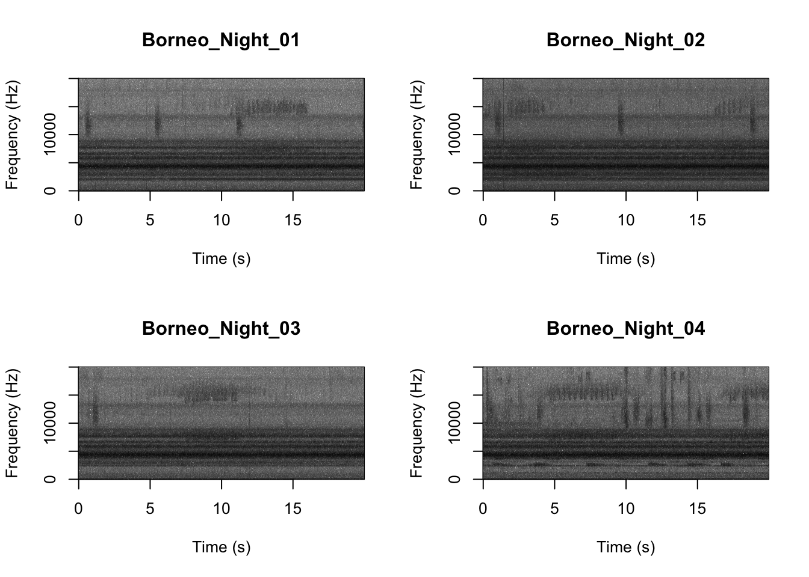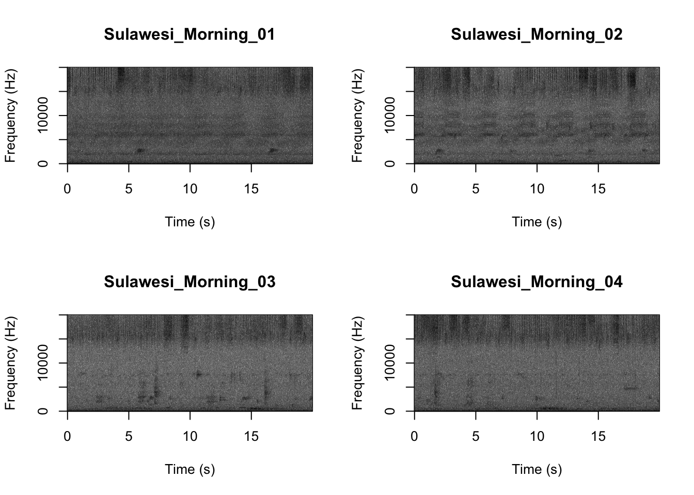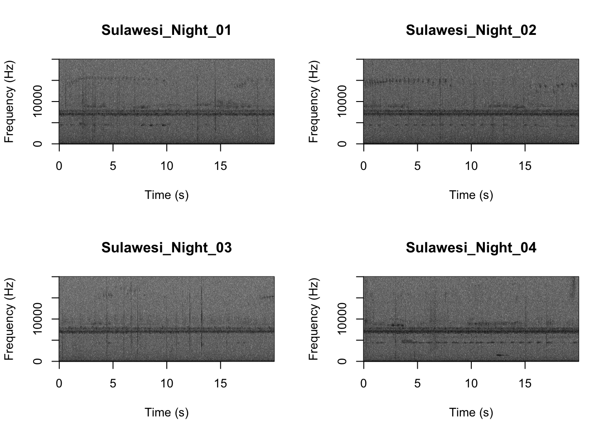
Now that you are doing looking at the figure we will clear the space. You can always re-run the code to look at the again.
Now just as above we will do feature extraction of our soundscape recordings. Thiswill convert our dataset into a smaller, much more manageable size.
Check the resulting structure of the dataframe to make sure it looks OK.
## [1] 16 177Now we visualize our results
pca_res <- prcomp(SoundscapeFeatureDataframe[,-c(1)], scale. = TRUE)
ggplot2::autoplot(pca_res, data = SoundscapeFeatureDataframe,
colour = 'Class')It looks like the Borneo_Night sampling period was much different from the rest! Let’s look at a single spectrogram from each sampling location and time.
par(mfrow=c(2,2))
SpectrogramSingle(sound.file ="SoundscapeRecordings/Borneo_Night_01.wav",
min.freq = 0,max.freq=22000,
Colors = 'Colors',downsample = FALSE)
SpectrogramSingle(sound.file ="SoundscapeRecordings/Borneo_Morning_01.wav",
min.freq = 0,max.freq=22000,
Colors = 'Colors',downsample = FALSE)
SpectrogramSingle(sound.file ="SoundscapeRecordings/Sulawesi_Night_01.wav",
min.freq = 0,max.freq=22000,
Colors = 'Colors',downsample = FALSE)
SpectrogramSingle(sound.file ="SoundscapeRecordings/Sulawesi_Morning_01.wav",
min.freq = 0,max.freq=22000,
Colors = 'Colors',downsample = FALSE)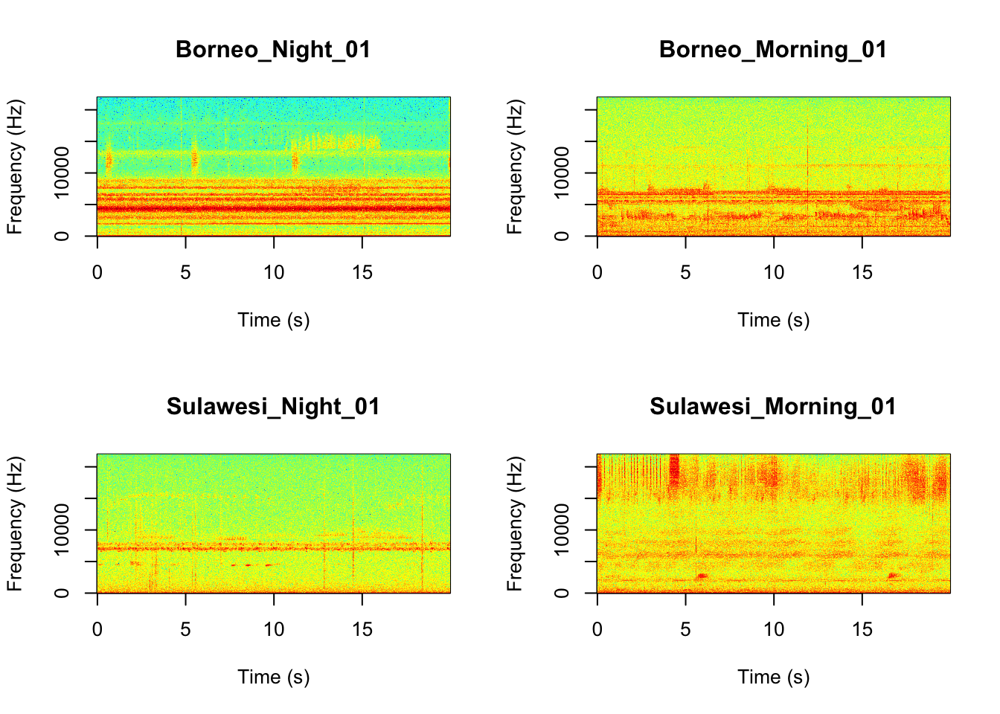
Question 3. You can listen to example sound files on the Canvas page. Between looking at the spectrograms and listening to the sound files what do you think are the main differences between the different locations and times?
Part 4. Now it is time to analyze the data you collected for this week’s field lab.
Upload your sound files into either the ‘MyFocalRecordings’ folder or the ’MySoundscapeRecordings’folder and run the code below.
NOTE: Make sure to delete the existing files before you add your own!
0.0.1 Part 4a. Your focal recordings
First lets visualize the spectrograms. You may want to change the frequency settings depending on the frequency range of your focal animals.
# We can tell R to print the spectrograms 2x2 using the code below
par(mfrow=c(2,2))
# This is the function to create the spectrograms
SpectrogramFunction(input.dir = "MyFocalRecordings",min.freq = 200,max.freq=2000)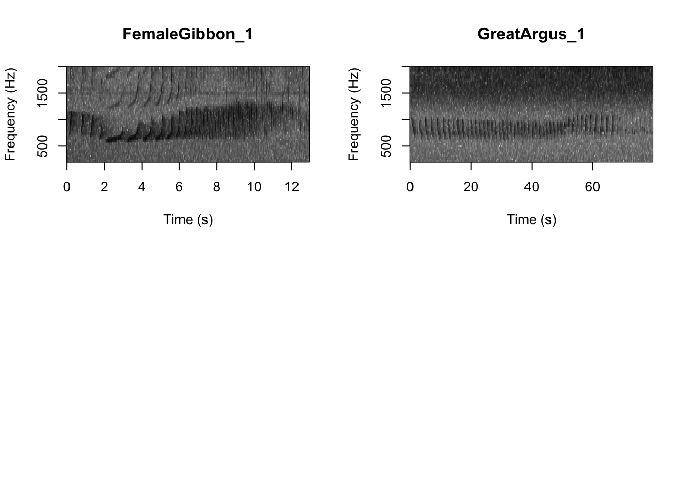
Here is the function to extract the features. Again, based on the frequency range of your focal recordings you may want to change the frequency settings.
Then we run the principal component analysis
Now we visualize our results

0.0.2 Part 4b. Soundscape recordings
First lets visualize the spectrograms. You probably don’t want to change the frequency settings for this.
# We can tell R to print the spectrograms 2x2 using the code below
par(mfrow=c(2,2))
# This is the function to create the spectrograms
SpectrogramFunction(input.dir = "MySoundscapeRecordings",min.freq = 200,max.freq=10000)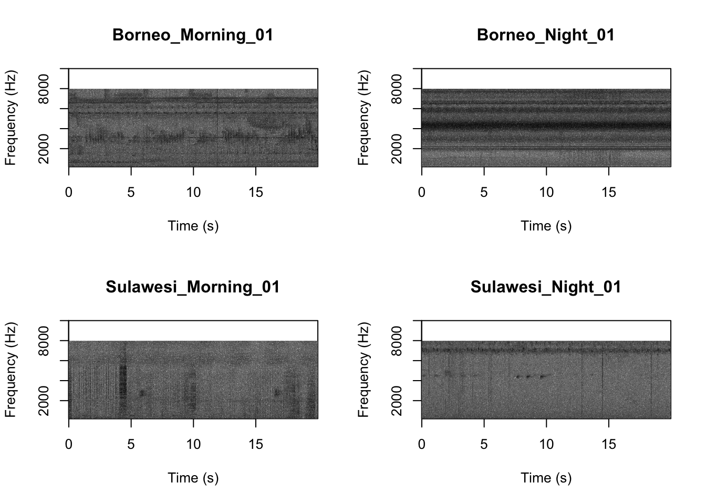
Then we extract the features, which in this case are the MFCCs.
MySoundscapeFeatureDataframe <-
MFCCFunctionSite(input.dir = "MySoundscapeRecordings",min.freq = 200,max.freq=10000)Check the resulting structure of the dataframe to make sure it looks OK.
Now we visualize our results
pca_res <- prcomp(MySoundscapeFeatureDataframe[,-c(1)], scale. = TRUE)
ggplot2::autoplot(pca_res, data = MySoundscapeFeatureDataframe,
colour = 'Class')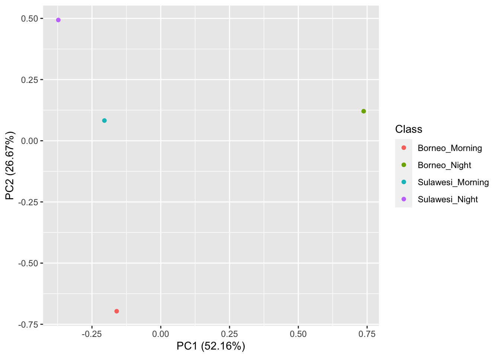
Question 4. Do you see evidence of clustering in either your focal recordings or soundscape recordings?